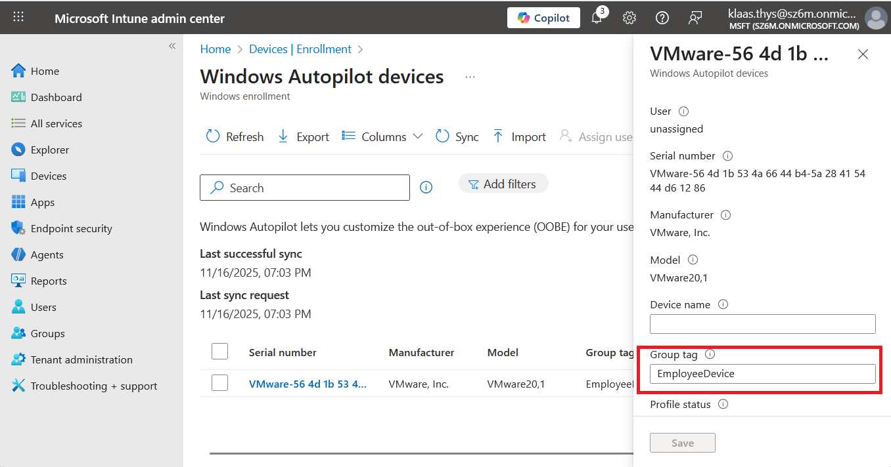
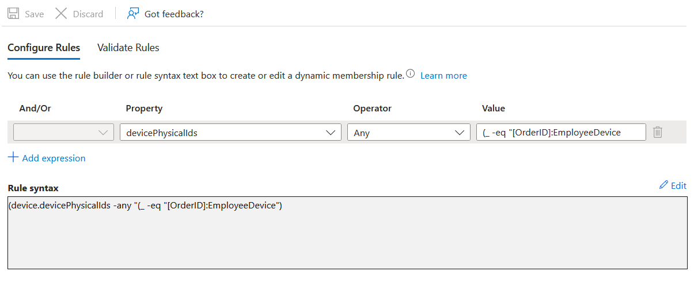
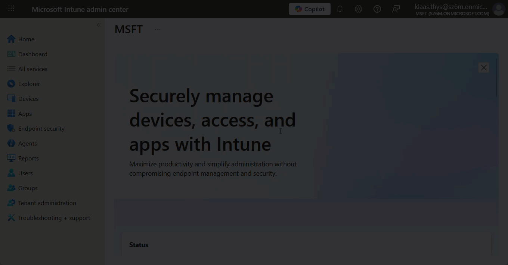
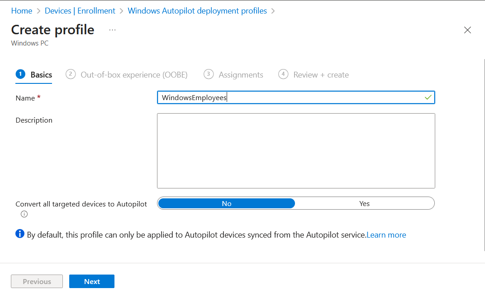
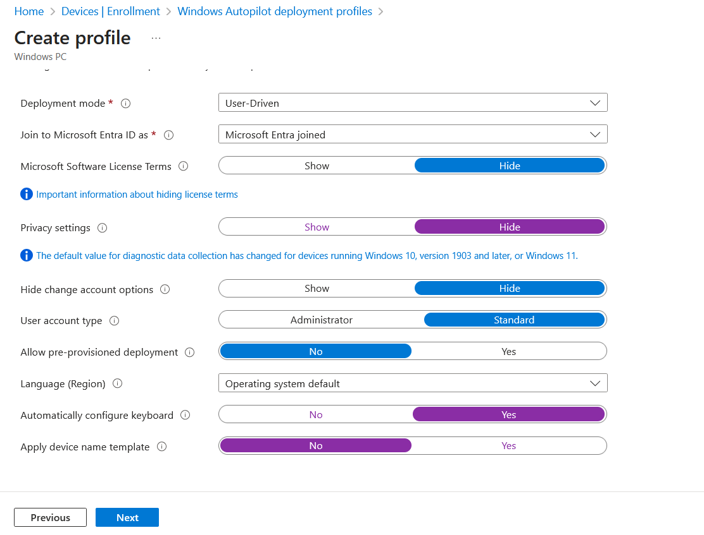
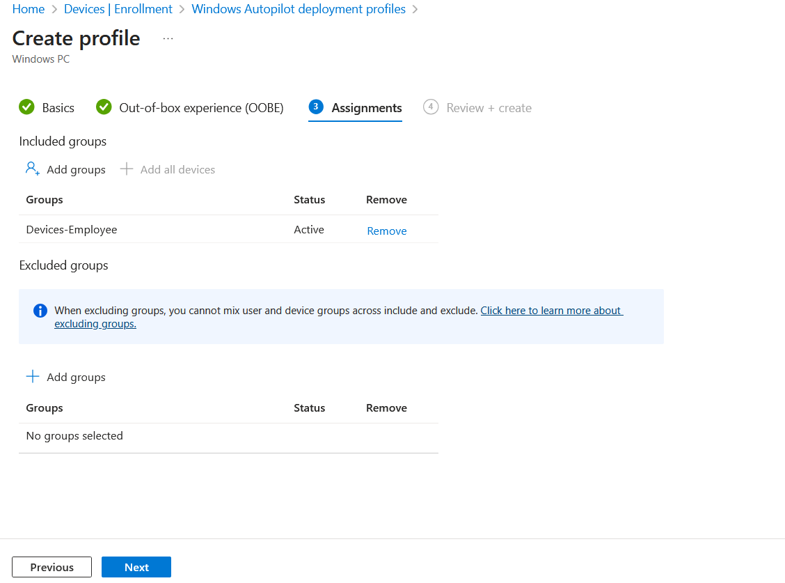
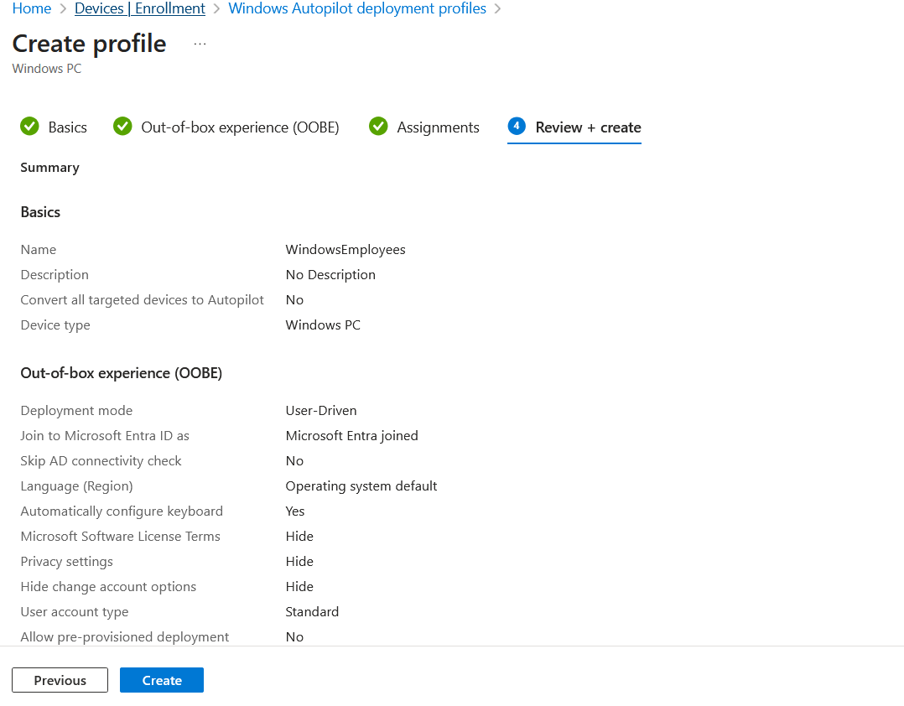

Autopilot
Windows Autopilot bestaat uit twee delen:
- Het toestel registreren. Je meldt het toestel aan bij Autopilot met zijn hardware hash. Zo weet Microsoft dat het toestel bij jouw tenant hoort. Dit deel heb je al gedaan in Een toestel inschrijven. Daar staat ook wat Autopilot, de OOBE en een hardware hash zijn.
- Het opstarten regelen. Je bepaalt hoe het toestel de eerste keer opstart: welke schermen de gebruiker nog ziet, welke naam het toestel krijgt en welke rechten de eerste gebruiker heeft. Dat doe je met een deployment profile. Dit deel behandelt deze pagina.
Zonder deployment profile moet de gebruiker de Out-of-Box Experience (OOBE) zelf doorlopen en alle vragen beantwoorden. Met een deployment profile gebeurt dat automatisch, op dezelfde manier voor elk toestel.
Hoe de onderdelen samenwerken
Om de OOBE te automatiseren heb je drie dingen nodig, die je in deze volgorde aanmaakt:
- Een group tag op het geregistreerde Autopilot-toestel.
- Een dynamic device group in Microsoft Entra die alle toestellen met die tag verzamelt.
- Een deployment profile dat aan die groep is toegewezen. Het bepaalt hoe de OOBE verloopt.
Wanneer een geregistreerd toestel opstart en verbinding maakt met internet, vraagt Windows aan Autopilot bij welke tenant het hoort en past het deployment profile toe dat eraan is toegewezen.
1. Autopilot group tag
Een group tag is een label dat je aan een toestel hangt. Zo kan Entra het toestel automatisch in de juiste groep plaatsen.
- Ga in Intune naar Devices → Enrollment → Windows Autopilot → Devices.
- Selecteer het toestel dat je een label wilt geven.
- Geef een Group tag in, bijvoorbeeld
EmployeeDevice. - Klik op Save.

2. Microsoft Entra dynamic device group
Een deployment profile wordt toegewezen aan een toestelgroep (device group). Maak een dynamic group die automatisch elk Autopilot-toestel met jouw group tag bevat.
-
Ga naar het Microsoft Entra admin center → Groups → New group.
-
Stel Group type in op Security, geef de groep een naam en stel Membership type in op Dynamic Device.
-
Klik op Add dynamic query en configureer de regel als volgt:
- Property:
devicePhysicalIds - Operator:
Any - Value:
_ -eq "[OrderID]:EmployeeDevice"
Vervang
EmployeeDevicedoor de group tag die je in stap 1 hebt ingegeven. - Property:
In regelsyntax ziet het resultaat er zo uit:
(device.devicePhysicalIds -any (_ -eq "[OrderID]:EmployeeDevice"))

Dynamic groups worden niet onmiddellijk gevuld. Nadat je de groep hebt opgeslagen of een group tag hebt gewijzigd, kan het even duren voor het toestel als lid verschijnt. Wacht tot het toestel in de groep zit voor je de OOBE van het toestel start.
3. De OOBE automatiseren met een deployment profile
Je automatiseert de Windows OOBE via Intune met een deployment profile. Een profiel maak je zo aan:
- Selecteer in het linkermenu Devices.
- Selecteer onder Device onboarding de optie Enrollment.
- Kies onder Windows Autopilot voor Deployment profiles.
- Klik op Create profile en selecteer Windows PC.

3.1. Basics
- Geef een naam in.
- (Optioneel) Voeg een beschrijving toe.
- Klik op Next.

3.2. Out-of-box experience (OOBE)
- Vul de instellingen van de Out-of-box experience in.
- Klik op Next.
De meeste opties bepalen of een scherm al dan niet verschijnt tijdens de OOBE. Zet ze waar mogelijk op Hide en pas de eigenlijke instellingen toe via configuration profiles. Zo moet de eindgebruiker bij de eerste installatie van het toestel niet door een reeks vragen klikken.

De belangrijkste instellingen:
User account type
- Administrator: de eerste gebruiker die zich aanmeldt op het toestel krijgt administratorrechten (de gebruiker wordt toegevoegd aan de lokale groep Administrators).
- Standard: de eerste gebruiker die zich aanmeldt op het toestel krijgt standaardrechten.
Apply device name template
Je kan voor elk toestel een unieke naam (hostname) laten genereren op basis van een sjabloon.
Voorbeeld: PXL-%RAND:5% geeft PXL-56314.
Opgelet: de cijfers worden willekeurig gegenereerd, dus dubbele namen kunnen voorkomen. Een hostname mag maximaal 15 tekens lang zijn, houd het sjabloon dus kort.
3.3. Assignments
- Voeg onder Included groups de dynamic device group toe die je in stap 2 hebt aangemaakt.
- Klik op Next.

3.4. Review + create
- Controleer de instellingen van het deployment profile.
- Klik op Create.

Resultaat
Vanaf nu volgt elk Autopilot-toestel met de group tag EmployeeDevice automatisch dit deployment profile: de gebruiker meldt zich aan met zijn Microsoft Entra-account, het toestel wordt in Intune ingeschreven en krijgt zijn configuratie zonder handmatige stappen.